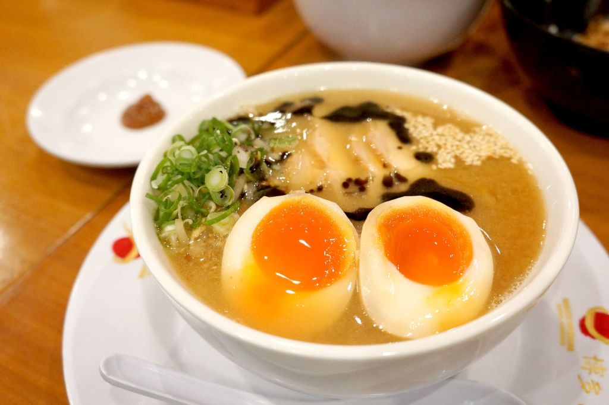
1. 博多ラーメン
基本的には豚骨主体の乳白色のスープと極細麺が特徴。
豚骨を強火で沸騰させるため、骨のゼラチンなどが溶け出し濁ったスープになる。
麺の硬さを注文する点や替え玉も当ラーメンの特色になっている。
ご当地ラーメンブームなどにより福岡市とその近郊を中心にラーメン店舗が増加・定着した。
ラーメンツアー企画や「らーめんタクシー」サービスなど福岡の観光スポットとしても人気を博している。
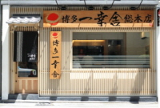
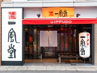
2. ごぼう天うどん
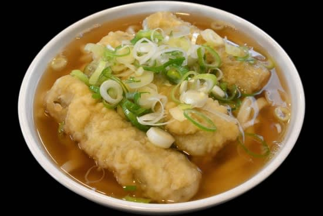
ごぼう天うどんは福岡県を中心とした地域のうどん。
うどんの上に笹がきごぼうをかき揚げにした(もしくはバラバラに揚がった)
天ぷらが乗っているもので、ごぼ天うどんと呼ぶこともある。
3. もつ鍋
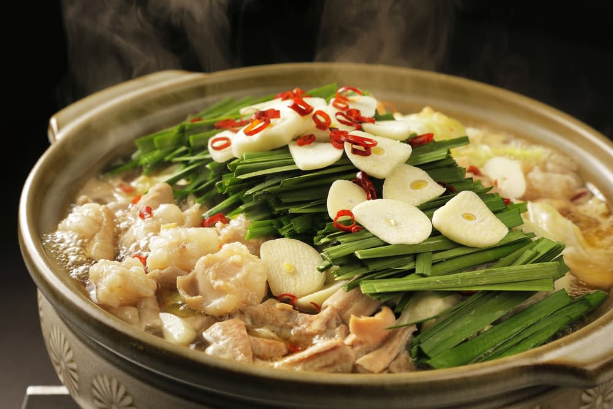
牛または豚のもつ（小腸や大腸などの内臓肉、別名「ホルモン」）を主材料とする鍋料理である。
ホルモン鍋（ほるもんなべ）とも呼ばれる。
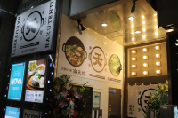
4. ハンバーグ
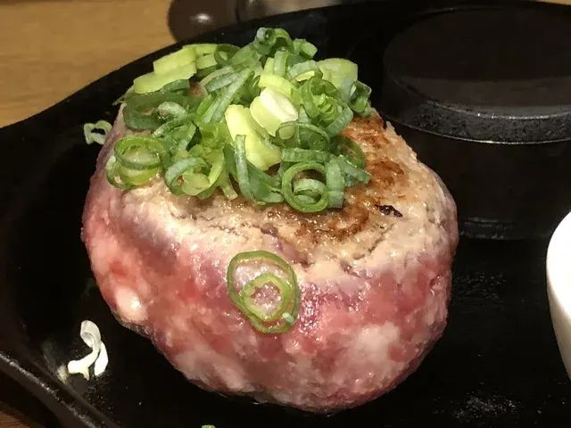
牛または豚のもつ（小腸や大腸などの内臓肉、別名「ホルモン」）を主材料とする鍋料理である。
ホルモン鍋（ほるもんなべ）とも呼ばれる。
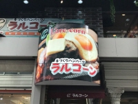
5. 水炊き
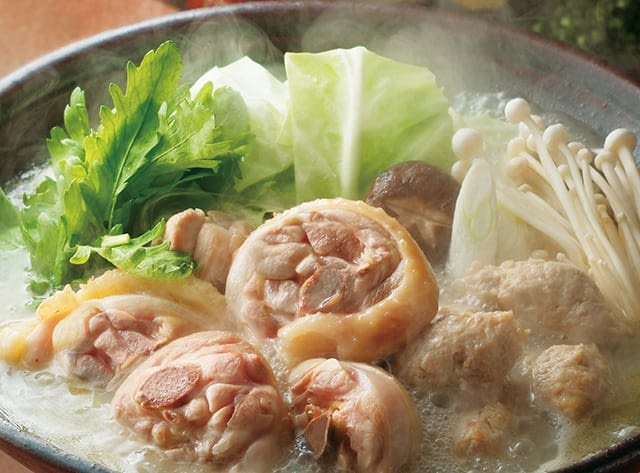
水炊き（みずだき、みずたき）は、日本の鍋料理。関西と九州に起源を持ち、歴史や調理法はそれぞれ異なる。
6. 明太子
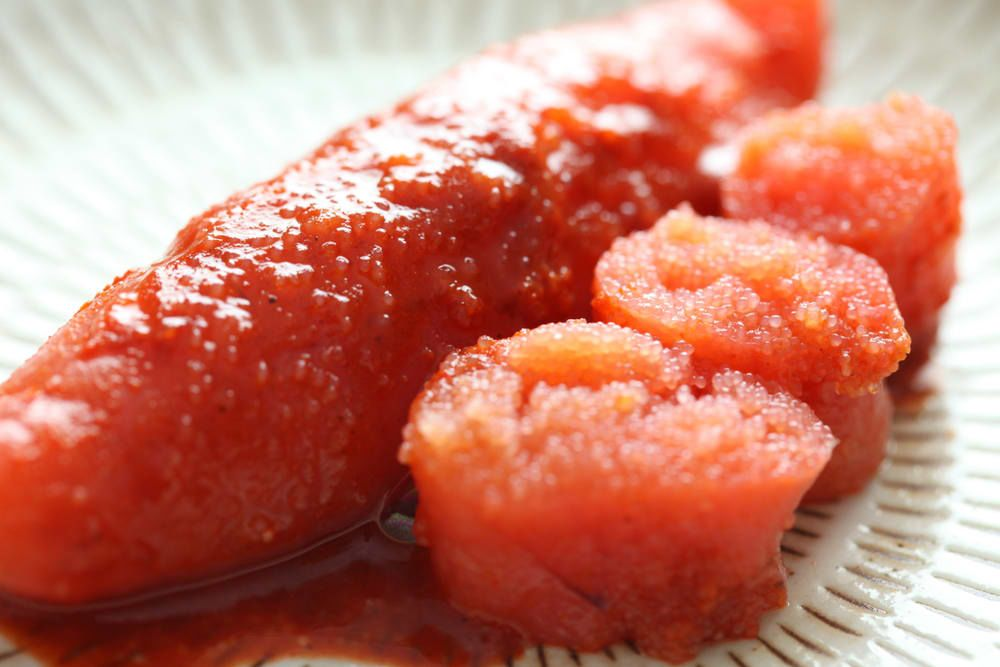
たらこ（鱈子。タラの卵巣=魚卵）の別名。
辛子明太子（唐辛子を主として漬けて味付けしたたらこ）の別名と略称。
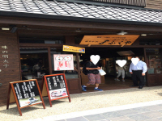
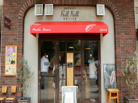
7. ひとくち餃子
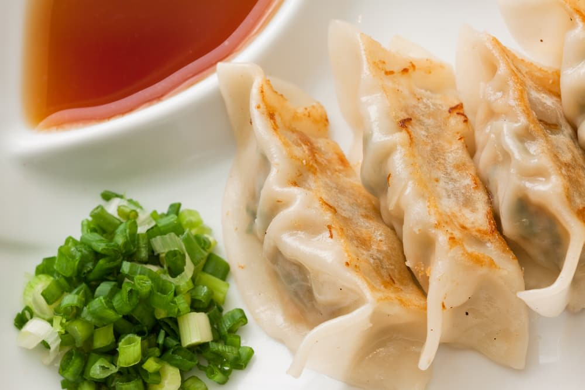
ひとくち餃子（ひとくちぎょうざ）とは、一口で食べられるサイズの小ぶりの餃子である。
大阪ひとくち餃子、博多ひとくち餃子などが有名である。
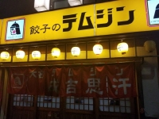